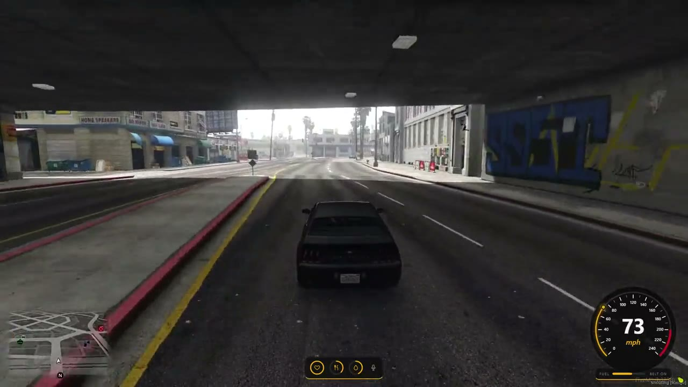

Selected work
Four projects I built and tested. The code of the three FiveM resources is public on GitHub.

Application portal
A website where players sign in with Discord and apply to a department. Staff review everything in one panel,
leave a note and approve or deny with one click. When someone is approved, the Discord role is given
automatically.
- A form for each department with its own questions
- A personal page where players see the status of their application
- Filters and search for staff, with a full history of every application
Next.js, TypeScript, Tailwind. The demo works fully in your browser.

ATM and banking (bank-nui)
A bank window that opens at ATMs. Players can deposit, withdraw and send money, and see their recent activity.
Every operation is checked on the server, so the window cannot be used to cheat.
- Balance is checked before every withdrawal and transfer
- The player has to stay near the ATM, and sessions expire
- Failed transfers are rolled back and every operation is logged
React, Lua, oxmysql. Tested on Qbox, ESX bridge included.

Vehicle garage (garage-nui)
A garage window with cards for each vehicle. Players mark favorites that are saved in the database. The server
spawns the vehicle, gives the keys and seats the player.
- Whitelist of models, permission check and a cooldown on the server
- Favorites saved per character
- One framework bridge for Qbox, ESX and QBCore
React, Lua, MariaDB. Tested on Qbox, the other bridges are ready for testing.

HUD (custom-hud)
A HUD with status rings, a round speedometer and short hints that teach new players the controls, such as the
seatbelt, locked vehicles and voice chat.
- Updates only when a value changes, so it stays light
- Hints appear at the right moment and go away once learned
- A small key reference panel that players can hide
React, Lua. Tested on Qbox.